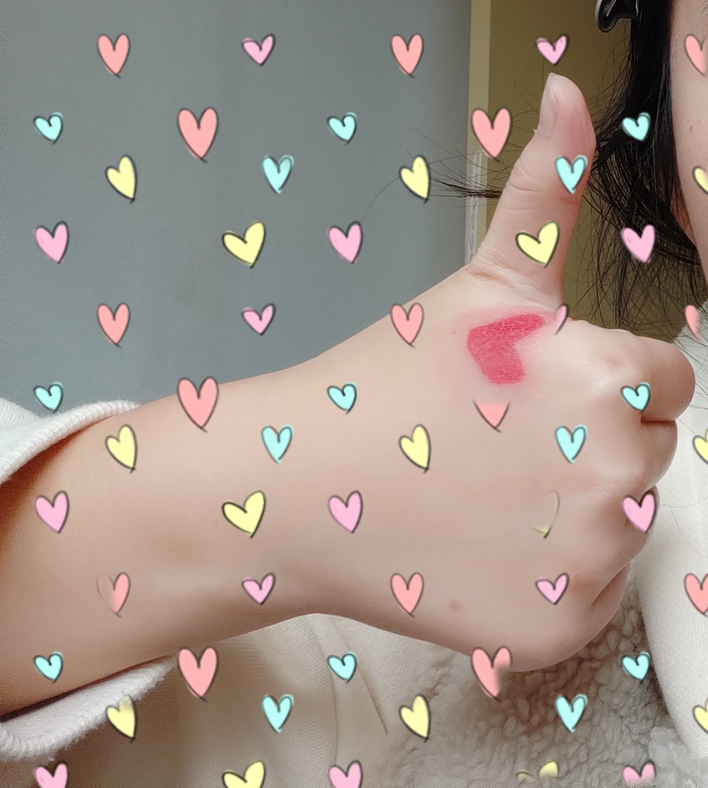

Blog
首页
分类
标签
归档
关于我

Emma
2020-05-16
1000
原创
关于刻意练习的清单
分类
标签1
打赏
微信扫一扫
博客信息
作者：
Emma
（联系作者）
发表时间：
2020-05-16
版权声明：自由转载-非商用-非衍生-保持署名（创意共享3.0许可证）
公众号转载：请在文末添加作者公众号二维码
评论
Matt
博主
今天下午 5:42
太赞了！
回复
Matt
博主
回复
Janny
今天下午 5:42
太赞了！
回复
发布
目录
留言

评论